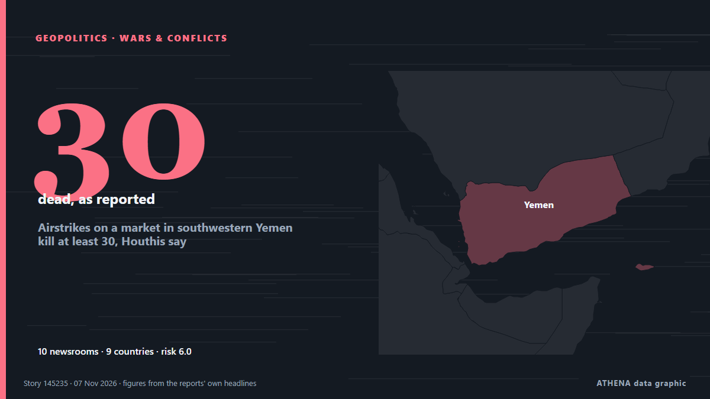

Airstrikes on a market in southwestern Yemen kill at least 30, Houthis say

Footage aired by Al-Masirah showed plumes of smoke rising from the site, with a damaged building containing canned food, destroyed vehicles, scattered fruit boxes and rubble and debris. από Courthouse News
Αναφέρθηκε ανεξάρτητα από 13 μέσα σε 10 χώρες από τις 6 Νοε, πρώτο το AzerNews· η κάλυψη εξαπλώνεται ακόμη. Το ATHENA εκτιμά τον κίνδυνο υψηλό (6.2/10), κυρίως λόγω της σοβαρότητάς του και του ρυθμού κάλυψης. Βεβαιότητα 92% (υψηλή): το επιβεβαιώνουν 13 ανεξάρτητα μέσα, μέση αξιοπιστία 76%. Μέσα ανά χώρα: Ηνωμένες Πολιτείες (2), Ινδία (2), Μαλαισία (2). Κάλυψη: 6 Νοε έως 7 Νοε, 22 ώρες.
Γιατί έχει σημασία: Η Ερυθρά Θάλασσα και τα στενά Μπαμπ ελ-Μαντέμπ είναι η συντομότερη θαλάσσια οδός Ασίας–Ευρώπης, μέσω της Διώρυγας του Σουέζ. Οι επιθέσεις σε εμπορικά πλοία αναγκάζουν τις εταιρείες να παρακάμπτουν την Αφρική, με κόστος χρόνου και χρημάτων για το παγκόσμιο εμπόριο και τη ναυτιλία.
Τι άλλαξε: 14 νέες αναφορές από 13 μέσα στο 24ωρο έως 7 Νοε.
Οι τίτλοι των ειδήσεων παρουσιάζονται στα αγγλικά, όπως δημοσιεύτηκαν.
Με μια ματιά
Επιλέγεται, βαθμολογείται και γράφεται από τη δημοσιευμένη μεθοδολογία του ATHENA. Κανένας συντάκτης δεν παρεμβαίνει σε μεμονωμένα γεγονότα. Πώς παράγεται ›
| 06 Nov 16:02 UTC | 1 |
|---|---|
| 06 Nov 17:02 UTC | 0 |
| 06 Nov 18:02 UTC | 1 |
| 06 Nov 19:02 UTC | 1 |
| 06 Nov 20:02 UTC | 0 |
| 06 Nov 21:02 UTC | 1 |
| 06 Nov 22:02 UTC | 0 |
| 06 Nov 23:02 UTC | 1 |
| 07 Nov 00:02 UTC | 0 |
| 07 Nov 01:02 UTC | 0 |
| 07 Nov 02:02 UTC | 0 |
| 07 Nov 03:02 UTC | 0 |
| 07 Nov 04:02 UTC | 0 |
| 07 Nov 05:02 UTC | 0 |
| 07 Nov 06:02 UTC | 0 |
| 07 Nov 07:02 UTC | 0 |
| 07 Nov 08:02 UTC | 1 |
| 07 Nov 09:02 UTC | 1 |
| 07 Nov 10:02 UTC | 1 |
| 07 Nov 11:02 UTC | 1 |
| 07 Nov 12:02 UTC | 2 |
| 07 Nov 13:02 UTC | 3 |
| 06 Nov 21:05 UTC | 3.9 |
|---|---|
| 06 Nov 21:20 UTC | 5.0 |
| 07 Nov 13:50 UTC | 6.2 |
Γιατί αυτοί οι αριθμοί
Σημασία
Κίνδυνος
Βεβαιότητα
Η κάλυψη — ποιος το ανέφερε και πότε
ο τίτλος όπως δημοσιεύτηκε · ανοίγει το πρωτότυπο- AzerNews · ΑζερμπαϊτζάνYemen market strikes leave over 30 casualties
- Courthouse News · Ηνωμένες ΠολιτείεςAirstrikes on a market in southwestern Yemen kill at least 30, Houthis say
- Gulf News · Ηνωμένα Αραβικά ΕμιράταAirstrikes on a market in southwestern Yemen kill at least 30, Houthis say
- NDTV · ΙνδίαYemen's Houthis Say 30 Dead In Saudi Strikes On Market
- Free Malaysia Today · ΜαλαισίαYemen’s Houthis say 30 dead in strikes on market
- Haaretz (English) · ΙσραήλAirstrikes on a market in southwestern Yemen kill at least 30, Houthis say
- France 24 English · ΓαλλίαYemen: 30 dead in strikes on Taiz market
- Middle East Eye · INTHouthi media says 11 killed in Saudi strikes on Yemen's Sanaa province
- Free Malaysia Today · ΜαλαισίαHouthis say 11 killed in Saudi strikes on Yemen’s Sanaa province
- Times of India · ΙνδίαSaudi strike kills 22 people, mostly women & kids, near Yemen's capital
- ABC News (International) · Ηνωμένες ΠολιτείεςAirstrike kills at least 22 people near Yemen's capital, Houthi official says
- News of Bahrain · Μπαχρέιν11 Killed in Saudi Airstrikes on Yemen’s Sanaa Province
- Kurdistan24 (English) · ΙράκThousands Of Syrian Troops Deploy to Saudi Arabia and Yemen
- DW English · ΓερμανίαYemen: 22 killed in strike near Sanaa, Houthis say